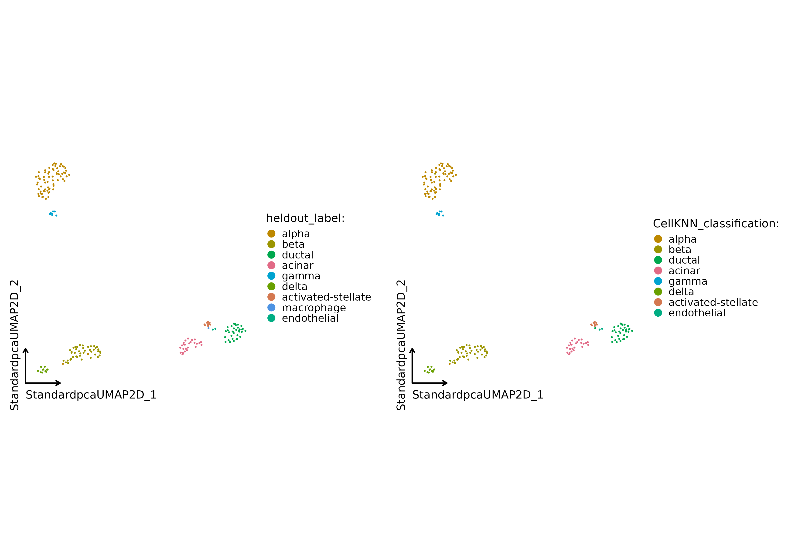
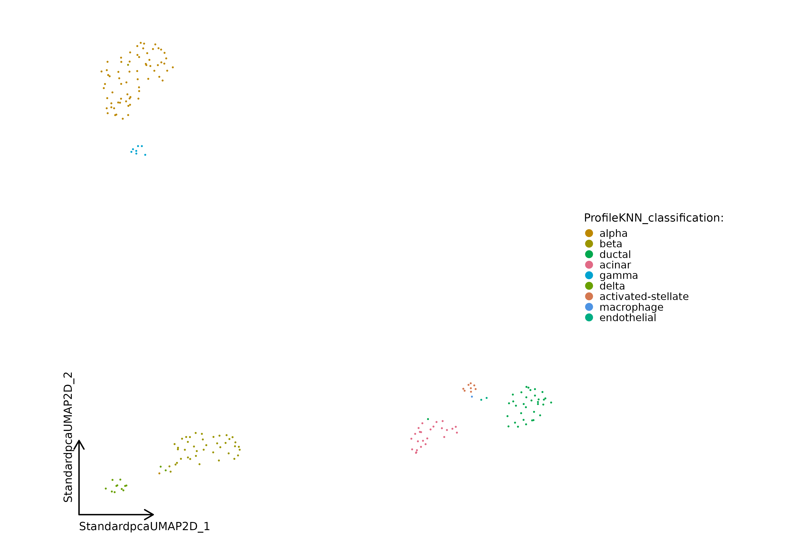
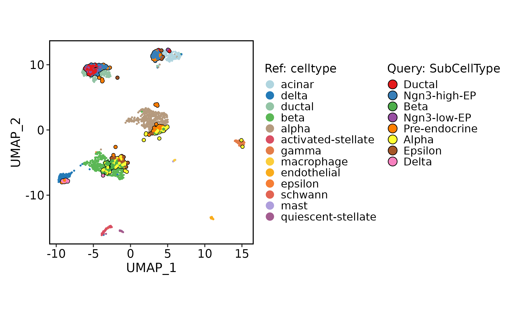
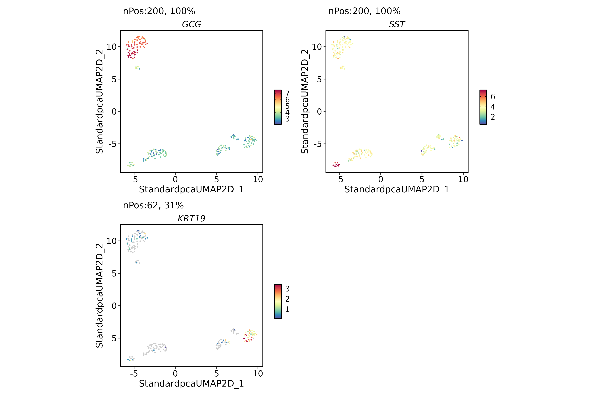
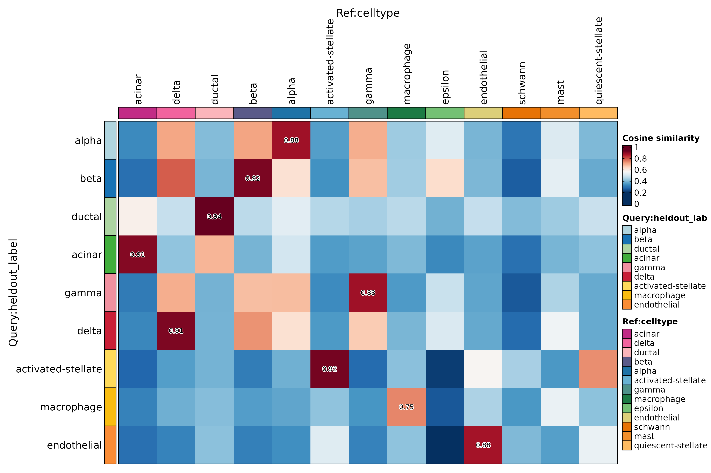

Cell annotation workflow
Source:vignettes/cell-annotation-workflow.Rmd
cell-annotation-workflow.RmdWhat you will do
Question: which reference cell types resemble each query cell, and where is that assignment uncertain? You will transfer labels, compare them with held-out annotations, inspect marker expression and save the prediction evidence.
The example uses all 1,600 cells of the bundled human
panc8_sub object. Every celseq2 cell is a
query; every other technology is reference. This is a technology-defined
holdout, with no random sampling and no shared cells. It illustrates
transfer within one tissue/species, not a validated classifier for
arbitrary tissue. The original package dataset is itself a study
subset.
The old human-to-mouse capitalization shortcut is intentionally avoided: changing letter case is not ortholog mapping. For cross-species work, prepare and report a versioned ortholog table first, resolving one-to-many mappings.
Prepare disjoint query and reference inputs
library(scop)
set.seed(11)
data(panc8_sub)
stopifnot(!anyNA(panc8_sub$tech), !anyNA(panc8_sub$celltype))
query_ids <- colnames(panc8_sub)[panc8_sub$tech == "celseq2"]
reference_ids <- setdiff(colnames(panc8_sub), query_ids)
stopifnot(length(intersect(query_ids, reference_ids)) == 0,
length(query_ids) + length(reference_ids) == ncol(panc8_sub))
query <- panc8_sub[, query_ids]
reference <- panc8_sub[, reference_ids]
query <- RunStandardWorkflow(query, assay = "RNA", seed = 11, cores = 1,
verbose = FALSE)
reference <- RunStandardWorkflow(reference, assay = "RNA", seed = 11, cores = 1,
verbose = FALSE)
query$heldout_label <- query$celltype
shared_features <- intersect(SeuratObject::VariableFeatures(query),
SeuratObject::VariableFeatures(reference))
stopifnot(length(shared_features) > 30)
data.frame(input = c("query", "reference"),
cells = c(ncol(query), ncol(reference)),
species = "Homo sapiens")
#> input cells species
#> 1 query 200 Homo sapiens
#> 2 reference 1400 Homo sapiens
table(reference$celltype)
#>
#> acinar activated-stellate alpha beta
#> 138 42 413 386
#> delta ductal endothelial epsilon
#> 100 204 24 3
#> gamma macrophage mast quiescent-stellate
#> 60 8 7 14
#> schwann
#> 1
setdiff(unique(query$heldout_label), unique(reference$celltype))
#> character(0)
length(shared_features)
#> [1] 653
label_colors <- stats::setNames(
grDevices::hcl.colors(length(unique(reference$celltype)), "Dark 3"),
sort(unique(as.character(reference$celltype)))
)The final check prints query labels absent from the reference, if any. Such states cannot be correctly named by closed-reference label transfer. Reference labels and highly variable genes are model inputs; held-out query labels are used only for evaluation. Neither UMAP appearance nor prediction scores prove cell identity.
Predict from individual reference cells
ref_collapsing = FALSE explicitly uses individual
reference cells; the default collapses reference groups to averages. The
prefix keeps these labels separate from the next method and from the
original annotations.
query <- RunKNNPredict(
srt_query = query, srt_ref = reference, ref_group = "celltype",
query_assay = "RNA", ref_assay = "RNA", features = shared_features,
ref_collapsing = FALSE, k = 30, filter_lowfreq = 0,
prefix = "CellKNN", verbose = FALSE
)
stopifnot(identical(colnames(query), query_ids),
"CellKNN_classification" %in% colnames(query@meta.data))
table(observed = query$heldout_label, predicted = query$CellKNN_classification)
#> predicted
#> observed acinar activated-stellate alpha beta delta ductal
#> acinar 26 0 0 0 0 0
#> activated-stellate 0 8 0 0 0 0
#> alpha 0 0 68 2 0 0
#> beta 0 0 0 41 1 0
#> delta 0 0 0 0 11 0
#> ductal 0 0 0 0 0 33
#> endothelial 0 0 0 0 0 0
#> gamma 0 0 0 0 0 0
#> macrophage 0 0 0 0 0 1
#> predicted
#> observed endothelial gamma
#> acinar 0 0
#> activated-stellate 0 0
#> alpha 0 0
#> beta 0 0
#> delta 0 0
#> ductal 0 0
#> endothelial 2 0
#> gamma 0 7
#> macrophage 0 0
CellDimPlot(query, group.by = c("heldout_label", "CellKNN_classification"),
reduction = "UMAP", label = FALSE, theme_use = "theme_blank",
palcolor = label_colors)
Read the contingency table row by row. A strong diagonal supports
agreement with the supplied labels; off-diagonal entries identify cells
to inspect. Agreement is descriptive here, because labels come from
related pancreas data. filter_lowfreq = 0 preserves rare
predictions so their uncertainty is visible; it does not discard rare
cells or relabel a failed transfer as correct.
Compare with bulk-like reference profiles
These are average expression profiles derived from the same reference
cells, not an independent bulk experiment. They test the effect of
reference aggregation.
AverageExpression(..., layer = "data") averages expression
on its unlogged scale, so we explicitly apply log1p()
afterward to match the query RNA data layer. Each column is
a named reference cell type. k = 1 selects the nearest
profile; 30 cell neighbors and one group profile are different models,
not a controlled change in only one parameter.
profiles <- Seurat::AverageExpression(reference, assays = "RNA", layer = "data",
group.by = "celltype", verbose = FALSE)$RNA
profiles <- log1p(profiles)
query <- RunKNNPredict(
srt_query = query, bulk_ref = profiles,
query_assay = "RNA", features = shared_features,
k = 1, filter_lowfreq = 0, prefix = "ProfileKNN", verbose = FALSE
)
table(cell_reference = query$CellKNN_classification,
profile_reference = query$ProfileKNN_classification)
#> profile_reference
#> cell_reference acinar activated-stellate alpha beta delta ductal
#> acinar 25 0 0 0 0 1
#> activated-stellate 0 8 0 0 0 0
#> alpha 0 0 68 0 0 0
#> beta 0 0 0 42 1 0
#> delta 0 0 0 0 12 0
#> ductal 0 0 0 0 0 33
#> endothelial 0 0 0 0 0 0
#> gamma 0 0 0 0 0 0
#> profile_reference
#> cell_reference endothelial gamma macrophage
#> acinar 0 0 0
#> activated-stellate 0 0 0
#> alpha 0 0 0
#> beta 0 0 0
#> delta 0 0 0
#> ductal 0 0 1
#> endothelial 2 0 0
#> gamma 0 7 0
names(query@tools)
#> [1] "CellKNN_classification" "ProfileKNN_classification"
CellDimPlot(query, group.by = "ProfileKNN_classification", reduction = "UMAP",
theme_use = "theme_blank", palcolor = label_colors)
comparison <- data.frame(
method = c("30 individual neighbors", "1 log-scale mean profile"),
cells = ncol(query),
matches_supplied_label = c(sum(query$heldout_label == query$CellKNN_classification),
sum(query$heldout_label == query$ProfileKNN_classification))
)
comparison$agreement <- comparison$matches_supplied_label / comparison$cells
comparison
#> method cells matches_supplied_label agreement
#> 1 30 individual neighbors 200 196 0.980
#> 2 1 log-scale mean profile 200 195 0.975Both prediction columns remain in the object. Different answers are a reason to inspect neighbors and markers, not a reason to silently replace one label. Scores are similarity/vote evidence, not calibrated clinical probabilities.
Project onto the reference and inspect markers
Projection places query cells in the reference’s coordinate system.
We request projection_method = "knn" explicitly: this is
neighbor-weighted projection, not a newly learned joint embedding or
evidence of successful batch correction.
ref_umap <- DefaultReduction(reference, pattern = "UMAP")
query <- RunKNNMap(srt_query = query, srt_ref = reference,
features = shared_features, ref_umap = ref_umap,
projection_method = "knn", verbose = FALSE)
ProjectionPlot(srt_query = query, srt_ref = reference,
query_group = "CellKNN_classification", ref_group = "celltype",
query_param = list(palcolor = label_colors, cells.highlight = TRUE),
ref_param = list(palcolor = label_colors))
markers <- c("INS", "GCG", "SST", "KRT19")
data.frame(marker = markers, present = markers %in% rownames(query))
#> marker present
#> 1 INS FALSE
#> 2 GCG TRUE
#> 3 SST TRUE
#> 4 KRT19 TRUE
FeatureDimPlot(query, features = intersect(markers, rownames(query)),
reduction = "UMAP", ncol = 2)
INS, GCG, SST and KRT19 provide marker checks for beta, alpha, delta and ductal labels, respectively. INS is absent from this feature-filtered package input, so the receipt records it as unavailable and the plot cannot assess that gene. Absence from the matrix is different from measured zero expression. Check multiple markers per state on your own data; ambient RNA and mixed cells can create misleading single-marker signals.
ht <- CellCorHeatmap(
srt_query = query, srt_ref = reference,
query_group = "heldout_label", ref_group = "celltype",
features = shared_features, nlabel = 1, label_by = "row", label_size = 8,
show_row_names = TRUE, show_column_names = TRUE
)
print(ht$plot)
This is group-level expression similarity. Similar support for several reference labels flags ambiguity; these groups should remain under review.
Save, reload, and check the hand-off
The build uses a temporary directory so repeated rendering cannot overwrite a previous analysis. For your work, replace it with a new persistent output folder. Save the object and plain-text metadata; a figure alone cannot reproduce the analysis. No cells are sampled for this export.
output_dir <- file.path(tempdir(), "cell-annotation-workflow")
dir.create(output_dir, recursive = TRUE, showWarnings = FALSE)
result_file <- file.path(output_dir, "analysis.rds")
saveRDS(query, result_file)
reference_file <- file.path(output_dir, "reference.rds")
saveRDS(reference, reference_file)
utils::write.csv(as.matrix(profiles), file.path(output_dir, "log-scale-reference-profiles.csv"))
writeLines(shared_features, file.path(output_dir, "shared-prediction-features.txt"))
utils::write.csv(comparison, file.path(output_dir, "prediction-agreement.csv"), row.names = FALSE)
utils::write.csv(query@meta.data, file.path(output_dir, "cell-metadata.csv"))
reloaded <- readRDS(result_file)
reloaded_reference <- readRDS(reference_file)
stopifnot(identical(colnames(reloaded_reference), reference_ids),
identical(reloaded_reference@meta.data, reference@meta.data))
stopifnot(identical(colnames(reloaded), colnames(query)),
identical(reloaded@meta.data, query@meta.data),
identical(SeuratObject::Reductions(reloaded),
SeuratObject::Reductions(query)))
data.frame(file = basename(list.files(output_dir, full.names = TRUE)),
bytes = file.info(list.files(output_dir, full.names = TRUE))$size)
#> file bytes
#> 1 analysis.rds 8029796
#> 2 cell-metadata.csv 30269
#> 3 log-scale-reference-profiles.csv 2562291
#> 4 prediction-agreement.csv 134
#> 5 reference.rds 36647970
#> 6 shared-prediction-features.txt 4005Use your own data and recover common errors
- Replace the
data(...)input withreadRDS("your-object.rds"), or create a Seurat object from a gene-by-cell raw-count matrix. Check that cell IDs are unique and metadata row names equal the expression column names. - Set the assay and grouping columns explicitly. Species, gene identifiers and reference labels must match your experiment; do not copy pancreas labels to unrelated tissue.
- If a reduction or metadata column is missing, inspect
SeuratObject::Reductions(object)andcolnames(object@meta.data), then run its producer chunk. A plot does not create the result it needs. - If a dependency is unavailable, install it in the analysis environment, restart R and rerun from the input chunk. A skipped or failed method is not evidence that it worked. Preserve warnings and the exact error in your report.
Build and analysis provenance
The receipt records the R seed. Python methods retain their documented backend seeds and parameters; setting the R seed alone does not control every backend. Package versions, BLAS libraries and backend changes can alter numerical results. Keep this receipt with the exported object. It describes this page’s actual render.
source_revision <- Sys.getenv("GITHUB_SHA")
if (!nzchar(source_revision) && nzchar(Sys.which("git"))) {
source_revision <- tryCatch(system2("git", c("rev-parse", "HEAD"), stdout = TRUE,
stderr = FALSE)[1], error = function(e) NA_character_)
}
article_source <- knitr::current_input(dir = TRUE)
build_receipt <- data.frame(
article = "cell-annotation-workflow",
built_utc = format(Sys.time(), tz = "UTC", usetz = TRUE),
scop = as.character(utils::packageVersion("scop")),
R = as.character(getRversion()),
source_revision = source_revision,
source_has_local_changes = if (nzchar(Sys.which("git")))
length(system2("git", c("status", "--porcelain"), stdout = TRUE, stderr = FALSE)) > 0 else NA,
article_md5 = unname(tools::md5sum(article_source)),
R_seed = 11,
cells_retained = ncol(query),
genes_in_active_assay = nrow(query),
stringsAsFactors = FALSE
)
build_receipt
#> article built_utc scop R
#> 1 cell-annotation-workflow 2026-10-10 12:06:55 UTC 0.9.2 4.6.1
#> source_revision source_has_local_changes
#> 1 151e7134c597a318db23aacdc01739f82fa44758 FALSE
#> article_md5 R_seed cells_retained genes_in_active_assay
#> 1 513717b50efbb5b18856aaa6eccd9e1b 11 200 12932
utils::write.csv(build_receipt, file.path(output_dir, "build-receipt.csv"),
row.names = FALSE)
writeLines(capture.output(sessionInfo()), file.path(output_dir, "session-info.txt"))Show the complete R session used for this page
sessionInfo()
#> R version 4.6.1 (2026-06-24)
#> Platform: x86_64-pc-linux-gnu
#> Running under: Ubuntu 24.04.5 LTS
#>
#> Matrix products: default
#> BLAS: /usr/lib/x86_64-linux-gnu/openblas-pthread/libblas.so.3
#> LAPACK: /usr/lib/x86_64-linux-gnu/openblas-pthread/libopenblasp-r0.3.26.so; LAPACK version 3.12.0
#>
#> locale:
#> [1] LC_CTYPE=C.UTF-8 LC_NUMERIC=C LC_TIME=C.UTF-8
#> [4] LC_COLLATE=C.UTF-8 LC_MONETARY=C.UTF-8 LC_MESSAGES=C.UTF-8
#> [7] LC_PAPER=C.UTF-8 LC_NAME=C LC_ADDRESS=C
#> [10] LC_TELEPHONE=C LC_MEASUREMENT=C.UTF-8 LC_IDENTIFICATION=C
#>
#> time zone: UTC
#> tzcode source: system (glibc)
#>
#> attached base packages:
#> [1] stats graphics grDevices utils datasets methods base
#>
#> other attached packages:
#> [1] scop_0.9.2
#>
#> loaded via a namespace (and not attached):
#> [1] RColorBrewer_1.1-3 jsonlite_2.0.0 shape_1.4.6.1
#> [4] magrittr_2.0.5 spatstat.utils_3.2-5 farver_2.1.2
#> [7] rmarkdown_2.32 GlobalOptions_0.1.4 fs_2.1.0
#> [10] ragg_1.5.2 vctrs_0.7.3 ROCR_1.0-12
#> [13] Rsamtools_2.28.0 spatstat.explore_3.8-3 RcppRoll_0.4.0
#> [16] htmltools_0.5.9 sass_0.4.10 thisutils_0.5.2
#> [19] sctransform_0.4.3 parallelly_1.48.0 KernSmooth_2.23-26
#> [22] bslib_0.12.0 htmlwidgets_1.6.4 desc_1.4.3
#> [25] ica_1.0-3 plyr_1.8.9 plotly_4.12.1
#> [28] zoo_1.9-1 cachem_1.1.0 igraph_2.3.4
#> [31] mime_0.13 lifecycle_1.0.5 iterators_1.0.14
#> [34] pkgconfig_2.0.3 Matrix_1.7-5 R6_2.6.1
#> [37] fastmap_1.2.0 MatrixGenerics_1.24.0 fitdistrplus_1.2-6
#> [40] future_1.76.0 shiny_1.14.0 clue_0.3-68
#> [43] digest_0.6.39 thisplot_0.4.6 ggnewscale_0.5.2
#> [46] colorspace_2.1-3 patchwork_1.3.2 S4Vectors_0.50.3
#> [49] Seurat_5.6.0 tensor_1.5.1 RSpectra_0.16-2
#> [52] irlba_2.3.7 GenomicRanges_1.64.0 textshaping_1.0.5
#> [55] labeling_0.4.3 progressr_1.0.0 spatstat.sparse_3.2-0
#> [58] httr_1.4.9 polyclip_1.10-7 abind_1.4-8
#> [61] compiler_4.6.1 withr_3.0.3 doParallel_1.0.17
#> [64] S7_0.2.2 BiocParallel_1.46.0 fastDummies_1.7.6
#> [67] ggforce_0.5.0 MASS_7.3-65 proxyC_0.5.2
#> [70] rjson_0.2.23 tools_4.6.1 lmtest_0.9-40
#> [73] otel_0.2.0 httpuv_1.6.17 future.apply_1.20.2
#> [76] goftest_1.2-3 glue_1.8.1 nlme_3.1-169
#> [79] promises_1.5.0 grid_4.6.1 Rtsne_0.17
#> [82] cluster_2.1.8.2 reshape2_1.4.5 generics_0.1.4
#> [85] gtable_0.3.6 spatstat.data_3.1-9 tidyr_1.3.2
#> [88] data.table_1.18.6.1 XVector_0.52.0 sp_2.2-3
#> [91] BiocGenerics_0.58.1 spatstat.geom_3.8-3 RcppAnnoy_0.0.23
#> [94] ggrepel_0.9.8 RANN_2.6.3 foreach_1.5.2
#> [97] pillar_1.11.1 stringr_1.6.0 spam_2.11-4
#> [100] RcppHNSW_0.7.0 later_1.4.8 circlize_0.4.18
#> [103] splines_4.6.1 tweenr_2.0.3 dplyr_1.2.1
#> [106] lattice_0.22-9 survival_3.8-6 deldir_2.0-4
#> [109] tidyselect_1.2.1 ComplexHeatmap_2.28.0 Biostrings_2.80.2
#> [112] miniUI_0.1.2 pbapply_1.7-5 knitr_1.52
#> [115] gridExtra_2.3.1 Seqinfo_1.2.0 IRanges_2.46.0
#> [118] scattermore_1.2 stats4_4.6.1 xfun_0.61
#> [121] matrixStats_1.5.0 UCSC.utils_1.8.0 stringi_1.8.9
#> [124] yaml_2.3.12 evaluate_1.0.5 codetools_0.2-20
#> [127] tibble_3.3.1 cli_3.6.6 uwot_0.2.5
#> [130] RcppParallel_6.2.1 Signac_1.17.1 xtable_1.8-8
#> [133] reticulate_1.47.0 systemfonts_1.3.2 jquerylib_0.1.4
#> [136] GenomeInfoDb_1.48.0 Rcpp_1.1.2 globals_0.19.1
#> [139] spatstat.random_3.5-2 png_0.1-9 spatstat.univar_3.2-0
#> [142] parallel_4.6.1 pkgdown_2.2.1 ggplot2_4.0.3
#> [145] dotCall64_1.2 sparseMatrixStats_1.24.0 bitops_1.1-0
#> [148] listenv_1.1.0 viridisLite_0.4.3 scales_1.4.0
#> [151] ggridges_0.5.7 SeuratObject_5.4.0 purrr_1.2.2
#> [154] crayon_1.5.3 GetoptLong_1.1.1 rlang_1.3.0
#> [157] fastmatch_1.1-8 cowplot_1.2.0What to Report
A compact annotation report should include:
- the disjoint query/reference cells, species, feature set and any ortholog mapping;
- the reference label column and embedding used for projection;
- whether labels came from bulk-like profiles or single-cell neighbors;
- neighbor count and filtering thresholds such as
filter_lowfreq; - projection plots, predicted label plots, and marker-gene checks;
- ambiguous groups where several labels have similar support.
Treat annotation as an evidence layer. Keep transferred labels separate from manual labels until marker genes and biological context support the assignment.